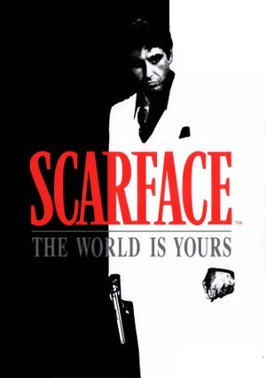

Yaralı Yüz'de, Fidel Castro, Küba’da istenmeyen rejim muhaliflerine Amerika’ya göç etme hakkı tanır. Küba’ya göç edecek olan binlerce insanın içerisinde azılı suçlular ve akıl hastaları da vardır. Bu azılı suçluların en bilinenlerinden Tony Montana da yakın arkadaşı Manny Ribera ile Miami’ye göç eder. Montana kendisini ülkenin uyuşturucu babalarından biri olan Frank Lopez’in kanatlarının altında bulur. Montana’nın ise geldiği yerlerden daha yükseklere ulaşmak yönünde oldukça iddialı ve cesur hedefleri vardır. 1932 tarihli kült filmin Brian De Palma tarafından yeniden çevrilmiş hali olan Scarface’in senaryosunu Oscar’lı yönetmen ve senarist Oliver Stone yazdı. Tony Montana’yı ise Al Pacino canlandırıyor.
